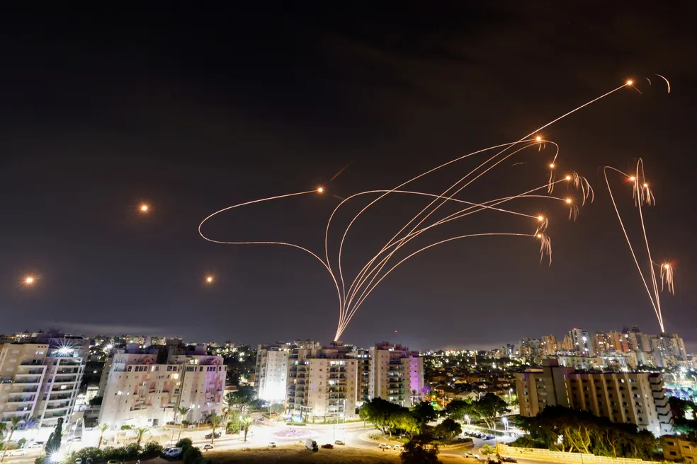

'Domo de Ferro': veja como funciona o sistema de defesa de Israel que intercepta e destrói mísseis
Centenas de foguetes foram lançados contra Israel a partir da Faixa de Gaza no sábado (7), anunciou o Hamas após um ataque-surpresa que elevou as tensões no Oriente Médio. Para minimizar os estragos, os israelenses contam com um escudo, conhecido como "Domo de Ferro".
De acordo com as forças militares de Israel, parte dos ataques do Hamas foi interceptado pelo Domo de Ferro, que é um sistema de defesa antimíssil. Ainda assim, vários foguetes atingiram diferentes cidades do país.
As pesquisas para a instalação de um sistema de defesa aérea começaram há mais de 35 anos.
- À época, Israel assinou um contrato com os Estados Unidos para participar de um projeto de defesa estratégica.
- Segundo o Ministério da Defesa de Israel, em 1986 foi tomada a decisão para o desenvolvimento de um sistema que pudesse atender as necessidades de segurança do país.
- Ferramentas de defesa foram criadas nos anos seguintes, a partir das pesquisas. No entanto, o desenvolvimento do atual "Domo de Ferro" começou em 2007.